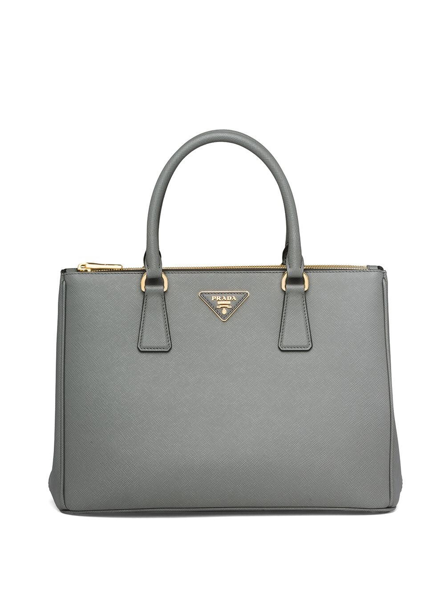
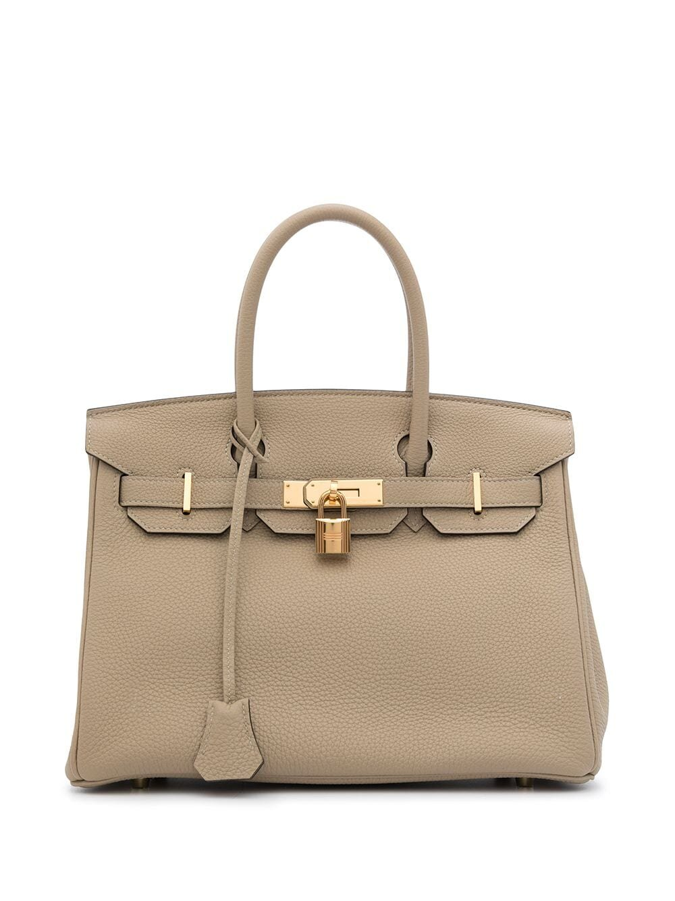
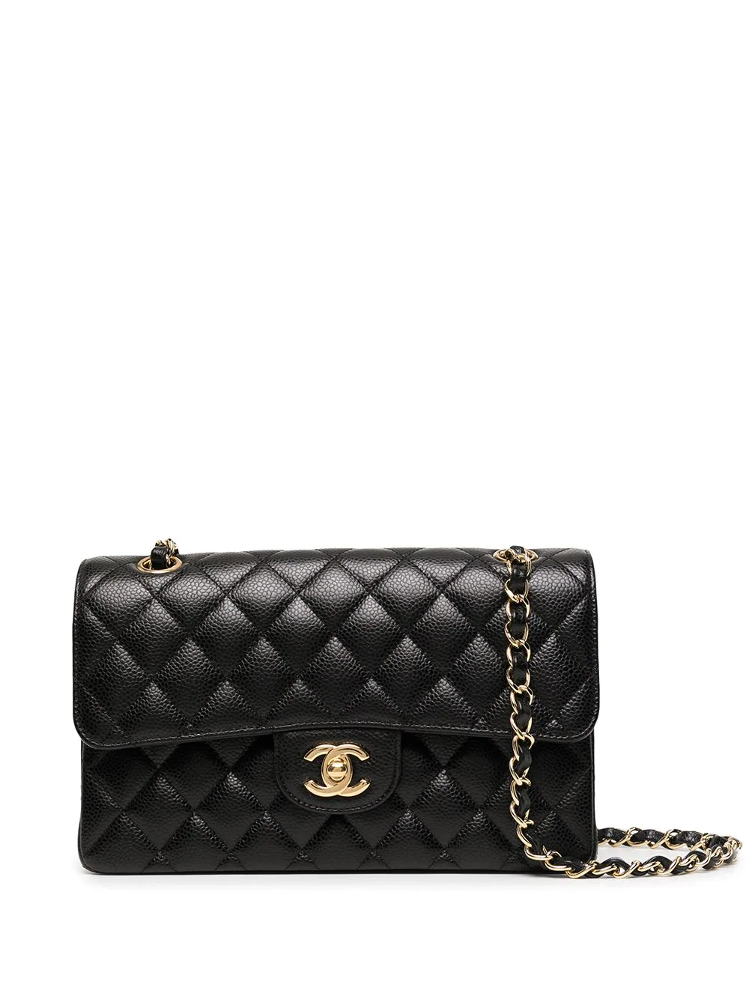

|  |
PradaTextura granulada, triángulo del logo esmaltado, dos asas redondas en la parte superior, correa ajustable y removible para el hombro, bolsillo interno con cierre y parche del logo en el interior. Material: cuero/nylon. |
|  |
HermesPiel Togo, correas características, detalle colgante de anillo para llave, set de llaves, detalle de candado, base de apoyo de metal, parte superior plegable, cierre giratorio, dos asas redondas en la parte superior, bolsillo interno con cierre, bolsillos de parche en el interior, forro de cuero, acabado en tono dorado y diseño trapezoidal, este artículo viene con una bolsa guardapolvo, esta pieza viene con capa de lluvia.. Informaciones valiosas. Esta pieza viene con un manual de instrucciones.. |
|  |
ChanelCapitonado de rombos, correa de cuero y cadena para el hombro, cierre con solapa doble característica, cierre giratorio característico de CC entrelazadas, compartimento principal, bolsillo interno, bolsillos de parche en el interior, bolsillos internos con cierre, logo CC entrelazado característico en la parte interna, sello del logo en el interior, bolsillo en la parte posterior y acabado en tono dorado. |